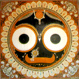
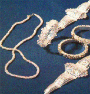
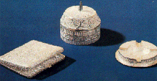
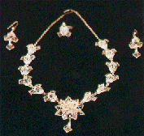
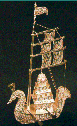
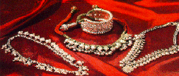
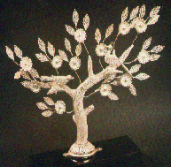
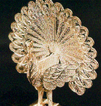
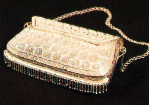
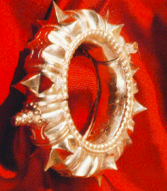

A Rich Legacy Of An Ancient Culture

Legends lace Orissa. Temples dot her landscape. On her streets Gods walk among men. Famous for the beauty and craftsmanship of Konark, Jagannath, Lingaraja and innumerable other temples, Orissa offers a striking selection of decorative and utilitarian arts and crafts. Visual manifestations of a millenium of Orissan culture, these arts and crafts embody and reflect a tradition which still lives in the creative imagination and skill of her craftsmen.
A Collector's Delight:
Look at any handicraft of Orissa. The applique works of Pipili or Patachitras and Papier Mache masks of Puri: Silver Filigree jewellery and golden grass mats of Cuttack or 'Katki' and Ikkat sarees of Cuttack and Sambalpur or Dhokra and clay toys of Mayurbhanj and Barapali and Lacquer work of Nawrangpur or Horn work of Parlakhemundi or the flexible brass fish of Ganjam, each handicraft exudes a charm and originality of its own and pristine beauty that remained untouched by time. The beauty and charm of Orissi handicrafts mirrors a heritage in its past and present flowing into eternity.

SILVER FILIGREE: The Shine Life Craves...

The silver filigree work of Orissa, locally known as Tarakashi, is a distinctive art form of great intricacy and delicacy. The art is ancient, dating back to the dawns of early history. The strongest evidence of this is the fact that one finds an almost similar art form in Indonesia. Obviously it must have travelled to this nation through ancient maritime links. Although not very much is known of its origin, it has some degree of Mughal artistic influence.

Made of silver drawn into threads as fine as spider's web, the filigree
jewellery and decorative art work of Orissa is internationally known for their
superb finish, fine foils and texture-snow glaze, delicate artistry and elegant
craftsmanship.

The silver filigree workers mostly practice this art around
Cuttack, and the products are sold in small shops lining Nayasarak
and Balu Bazaar. Most of the artists work with an alloy of 90 percent or more
pure silver.
The filigree is fashioned with fine strands of silver wire, made by drawing the
silver through successively smaller holes. After they are shaped, a solder of
silver and borax is applied.


The variety of the produce from silver-smiths is amazing. These range from
filigree necklaces to bangles, bracelets, perfume containers, armlets, earrings,
hairpins, dainty floral and leaf patterned purses; they make ideal presents
for loved ones.


For those who prefer the sheen of gold, the ornaments can be
glazed in gold. Right from the ancient period, the filigree workers of Cuttack
supplied filigree items that included rose water sprayers and candlestands to
native and foreign buyers. Ornamental trees,

brooch and pendants or the highly proportional peacock motif ships that reflects Orissa's seafaring ways, each have a long history.


Even Mughal designs have been incorporated in this pristine art. There are also lovely bowels, cup holders, key rings, cufflinks, and decorative pieces.


Silver objects traditionally play an important role in family life. In well to do families a child is often served his first solid food in a silver bowl, generally presented by the grand-parents. In most Oriya marriages, if resources permit, brides are still presented with a set of silver dishes which are used for ritual offerings to the gods. Silver is also used for certain temple ornaments, especially for crowns of divine images.

The export potential of this craft is truly enormous expecially since the wares
are hardy and long lasting, and able to maintain their lustre for long. Modern
silver items are sold by weight. Good selection can be found in the emporia,
but it is more fun to browse through the dozens of small shops in Cuttack.
Region
- CUTTACK
Image Support : Manish Desai, and Bala Krishnamurthy
Text Support : Somdutt Behura